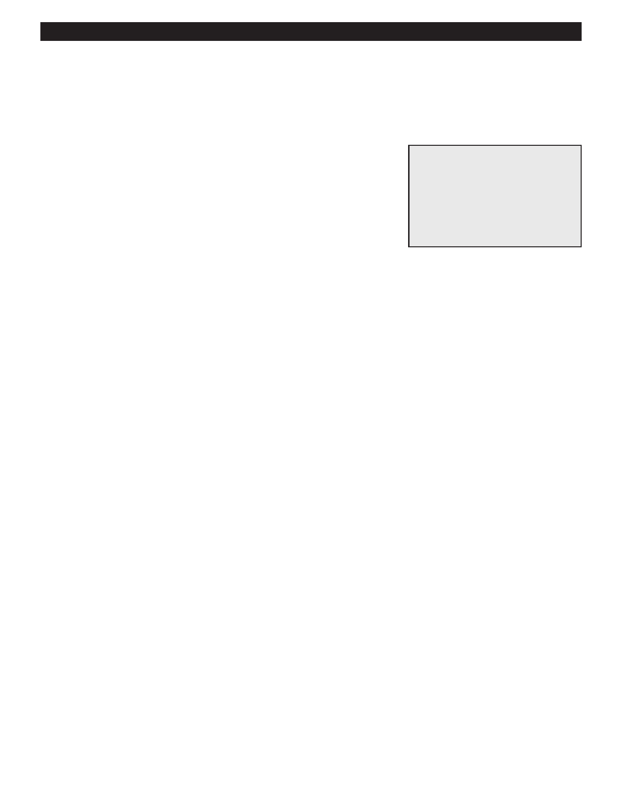

PA RT I C I PA N T R E S O U R C E G U I D E
Testing and Replacing a Dishwasher Water Inlet Valve
If the dishwasher does not fill with water upon start up, the problem could be a bad
water inlet valve.
Safety
Tools and Materials Needed
Make sure the power to the dishwasher is off.
Screwdriver
Use lockout/tagout procedures.
Insulated combination tool
Lockout/tagout device
Wear eye protection when working with electrical systems.
Multimeter
Water inlet valve
How-to Steps
1. Unplug dishwasher or turn off electricity to dishwasher at main electrical panel.
2. Lockout/tagout the panel.
3. Turn off water supply to dishwasher.
4. Remove lower front panel on dishwasher.
5. Check water inlet valve connections—hose to tub and incoming water line. These are typically on the left bottom.
6. Label, and disconnect wires to inlet valve.
7. Use multimeter on RX1 setting to test water inlet valve:
8. Touch one probe to one terminal and the other probe to the other terminal.
9. If the display shows infinity, the valve is bad and needs to be replaced.
10. If a new valve is needed, remove the old valve and connect the hose and incoming water line to the new water
inlet valve.
11. Attach wires to the inlet valve.
12. Replace lower front panel.
13. Turn on water supply.
14. Turn on electricity to dishwasher.
15. Turn on dishwasher and check operation.
Notes:
70